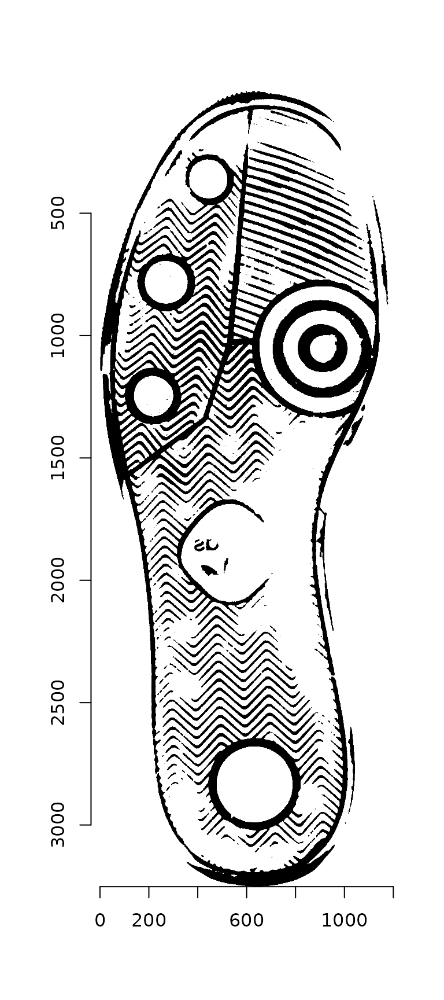
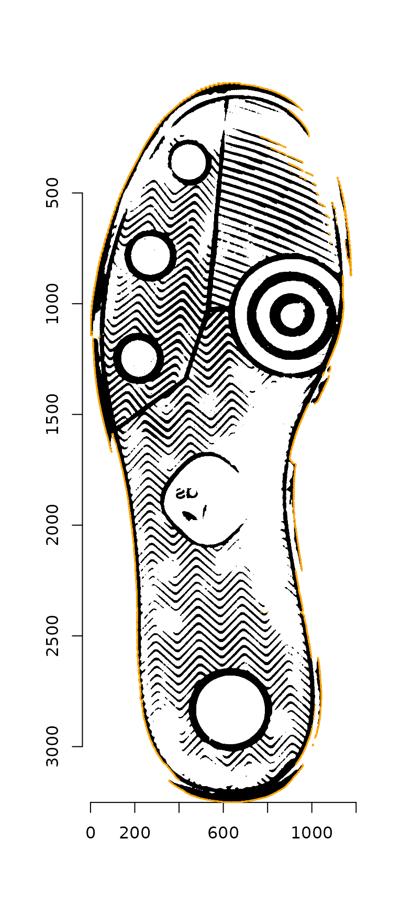
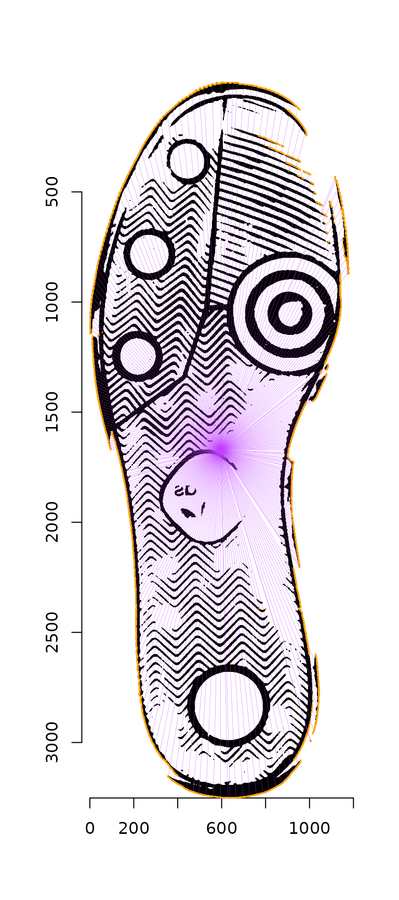
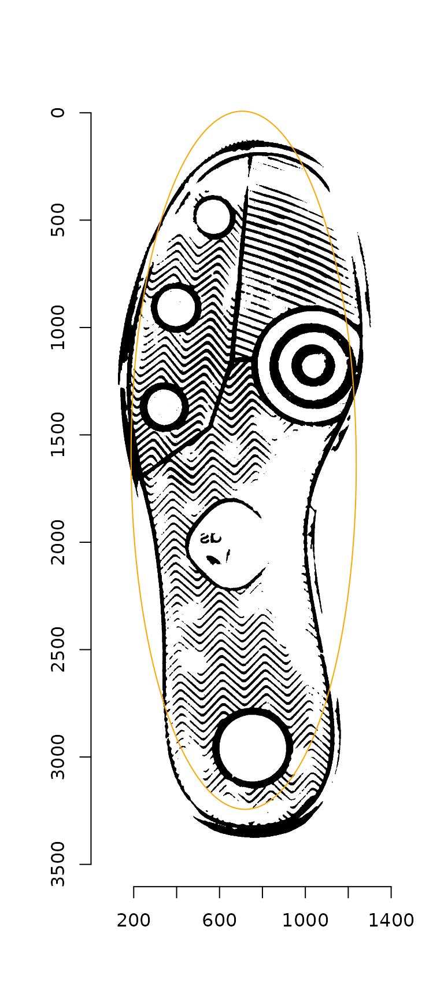

Ellipse Alignment
Susan VanderPlas
2021-01-14
Source:vignettes/ellipse-alignment.Rmd
ellipse-alignment.Rmdlibrary(imager)
library(dplyr)
library(ImageAlignR)
if (!"ShoeSampleData" %in% installed.packages()) {
devtools::install_github("srvanderplas/ShoeData")
}
#
checking for file ‘/tmp/Rtmp8U7lXA/remotes2264522c855e/srvanderplas-ShoeData-6be7536/DESCRIPTION’ ...
✓ checking for file ‘/tmp/Rtmp8U7lXA/remotes2264522c855e/srvanderplas-ShoeData-6be7536/DESCRIPTION’
#
─ preparing ‘ShoeSampleData’:
#
checking DESCRIPTION meta-information ...
✓ checking DESCRIPTION meta-information
#
─ checking for LF line-endings in source and make files and shell scripts
#
─ checking for empty or unneeded directories
# ─ building ‘ShoeSampleData_0.1.0.tar.gz’
#
#
imlinks <- system.file(package = "ShoeSampleData", "extdata/") %>%
list.files(full.names = T) %>% sort()
img <- load.image(imlinks[1])
plot(img)
First, we must remove the border region. Noting that most of the border region is yellow or red, we can take the ratio of the red and green color channel values to the blue color channel value (I derived this via experimentation - there may be a better way). Once we have the bounding box of the “real” portion of the image, we can switch to grayscale, clean the image up a bit, and autocrop it.
img_bbox <- img %>%
imsplit(axis = "c") %>%
(function(x) is.finite((x[[1]] + x[[2]])/x[[3]])) %>%
as.cimg() %>%
(function(x) x == 1)
img_bw <- crop.bbox(img, img_bbox) %>%
grayscale() %>%
map_halfimg(fun = autocrop) %>%
crop.borders(nx = 5, ny = 5) %>%
autocrop() %>%
threshold() %>%
shrink(3) %>%
grow(3) %>%
autocrop() %>%
colorise(., Yc(.) > 3500, 1) %>%
autocrop()
plot(img_bw)
Next, we identify the contour points as described in Gwo & Wei (2016).
contour_points <- outer_contour(img_bw)
# Warning: `data_frame()` is deprecated as of tibble 1.1.0.
# Please use `tibble()` instead.
# This warning is displayed once every 8 hours.
# Call `lifecycle::last_warnings()` to see where this warning was generated.
contour_points_df <- outer_contour(img_bw, as_cimg = F)

These points are then thinned by eliminating any points whose radii from the image centroid overlap, leaving only the most distant points. (The plot below shows a more sparse set of points than those actually chosen, for visualization ease.)
reliable_contour_points <- contour_points %>%
thin_contour(img = img_bw, n_angles = 100, as_cimg = T)
plot(img_bw)
highlight(contour_points, col = "orange")
segments(reliable_contour_points_df$x, reliable_contour_points_df$y,
centroid$x1, centroid$y1, col = "darkorchid1", lwd = .2)
Once the contour of the shoe has been identified, it is possible to fit an ellipse to these points, creating a major and minor axis for the shoe.
ellipse <- reliable_contour_points %>%
contour_ellipse_fit()
ellipse
# CenterX CenterY AxisA AxisB Angle
# 1 565.7444 1437.147 490.1929 1586.868 179.8809
plot(img_bw)
reliable_contour_points %>%
highlight(col = "darkorchid1")
points(ellipse$CenterX, ellipse$CenterY, col = "orange", cex = 1.5, pch = 16)
ellipse_points(ellipse, col = "orange")
Using the fitted ellipse, we can take the following steps:
- Rotate the shoe about the center point in order to ensure that the major axis is vertical
- Re-fit the ellipse to the rotated shoe
- Use the minor axis of the re-fitted ellipse to split the shoe into two regions - physically, into toe and heel.
angle <- ellipse$Angle
if (angle > 90) {
angle <- angle - 180
} else if (angle > 45) {
angle <- angle - 90
} else if (angle > -45) {
angle <- angle
} else if (angle > -90) {
angle <- angle + 90
} else {
angle <- angle + 180
}
img_rot <- img_bw %>%
pad(250, axes = "xy", val = 1) %>%
rotate_xy(angle = -angle, cx = ellipse$CenterX + 250,
cy = ellipse$CenterY + 250, boundary = 1)
rot_ellipse <- img_rot %>%
outer_contour %>%
thin_contour(img = img_rot) %>%
contour_ellipse_fit()
plot(img_rot)
ellipse_points(rot_ellipse, col = "orange")
Alternately, we can use a convenience function which completes these steps in a single command:
img_rot <- img_bw %>%
img_rotate_refit(show_plot = T)
# Warning in imager::bucketfill(., 1, 1, color = c(1, 1, 1), sigma = 0.1): Adding
# colour channels to image (was grayscale)
# converting image to grayscale
# converting image to grayscale
With our new, nicely aligned ellipse, we also have a natural coordinate system, with the major axis running vertically through the centroid of the image.
plot(img_rot$img)
abline(v = img_rot$ellipse$CenterX, col = "purple")
abline(h = img_rot$ellipse$CenterY, col = "purple")